请访问原文链接：使用 “恢复模式” 或 “DFU 模式” 来更新和恢复 iOS 固件 查看最新版。原创作品，转载请保留出处。
作者主页：sysin.org
本文对于 iOS 设备通用，即可适用于 iPhone、iPad、iPod touch。下文中描述的 iPhone，当然也可以是您的 iPad。
2024.09.18，iOS 18/iPadOS 18 发布了，同样适用。
简明步骤
下载 ipsw 固件：访问
https://ipsw.me/选择设备类型和机型，根据提示下载即可。重启 iPhone，并使用线缆（自带的充电线）与电脑相连。
打开 Finder（访达），浏览到边栏的 iPhone，按住 Option 键，点击 “更新”（或者 “检测更新”）按钮，浏览到下载的 ipsw 文件，根据提示完成更新。
如果使用 Windows 电脑，需要下载并安装 iTunes，按住 Shift 键，点击 “更新”（或者 “检测更新”）按钮，浏览到下载的 ipsw 文件，根据提示完成更新。
就这么简单，如果需要了解一下详细步骤，看下面的描述吧。
一、了解 Recovery Mode 和 DFU Mode
1. 了解 iOS 和 iPadOS 设备启动过程
启动过程每个步骤包含的组件都经 Apple 加密签名以启用完整性检查，因此只有在验证信任链后，启动才能继续。这些组件包括引导载入程序、内核、内核扩展项和蜂窝网络基带固件。这一安全启动链的设计旨在验证软件的最底层不被篡改。
iOS 或 iPadOS 设备开机后，其应用程序处理器会立即执行只读内存（称为 Boot ROM）中的代码。这些不可更改的代码（称为硬件信任根）是在制造芯片时设定的隐式受信任代码。Boot ROM 代码包含 Apple 根证书颁发机构 (CA) 公钥，该公钥用于验证 iBoot 引导载入程序是否经过 Apple 签名，以决定是否允许其载入。这是信任链中的第一步，信任链中的每个步骤都会检查下一步骤是否已经过 Apple 的签名 (sysin)。iBoot 完成任务后，会验证和运行 iOS 或 iPadOS 内核。对于搭载 A9 或更早 A 系列处理器的设备，Boot ROM 还会载入和验证底层引导载入程序 (LLB)，之后会依次载入和验证 iBoot。
无法载入或验证以下阶段时，处理方式因硬件而异：
- Boot ROM 无法载入 LLB（较旧的设备）：设备固件升级 (DFU) 模式
- LLB 或 iBoot：恢复模式
出现任一情况时，设备都必须通过 USB 连接到 “访达”（macOS 10.15 或更高版本）或 iTunes（macOS 10.14 或更低版本），并恢复为出厂默认设置。
2. 什么是 Recovery Mode
Recovery Mode，也称为恢复模式，是一种使 iPhone 进入 iBoot 引导加载程序模式的方法。当您的 iOS 设备进入恢复模式时，它将显示 “连接到 iTunes” 屏幕。在此模式下，您可以通过 iTunes/Finder 还原 iPhone，以修复卡在 Apple 徽标上的 iOS、iOS 下载损坏、Phone 没有响应等问题。之后，您的设备将更新为最新的 iOS 版本。
下图左侧是是 iTunes 画面，macOS Catalina 10.15 之前的版本或者 Windows，需要使用 iTunes 连接。macOS Catalina 10.15 及之后版本，直接在 Finder 中连接 iOS 设备，即右侧画面。
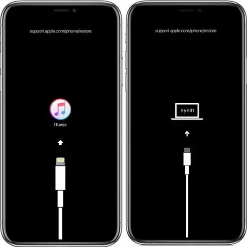
本文使用恢复模式来更新完整的 iOS 软件包，可以指定版本，而不是仅仅最新版本，当然前提是 Apple 并没有关闭该版本的验证。
3. 什么是 DFU Mode
DFU Mode 是指 Device Firmware Upgrade 设备固件升级模式，在该模式下，当您需要解决关键软件问题时，将绕过 iBoot 引导加载程序，而 iOS 设备将连接到 iTunes/Finder。在 iPhone DFU 模式下，您的设备将显示全黑的屏幕 (sysin)。该模式通常用于越狱后解决设备的问题。
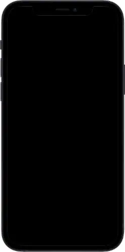
4. DFU Mode 和 Recovery Mode 的区别
恢复模式与 DFU 模式都可以用来恢复 iOS 软件，但是区别在于 DFU 模式直接跳过了 iBoot 引导程序，所以画面是全黑。
以下是 Apple 官方对 iBoot 的释义：
1 | iBoot |
Recovery Mode 中可以不抹掉数据更新软件，或者恢复出厂设置，但是 DFU Mode 只能恢复原始设置，所有数据都被抹掉。
对于普通用户而言，不用考虑 Jealbreak，一般使用恢复模式，使用恢复模式也可以降级未关闭验证的 iOS 版本。以下描述的通过 iTunes/Finder 手动更新 iOS 软件，其实也是在恢复模式下进行的。
在 Apple Configurator 2 可以直观的看到 iPhone 的状态差别：
正常模式
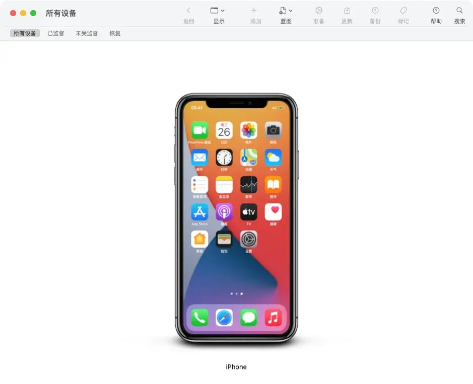
恢复模式
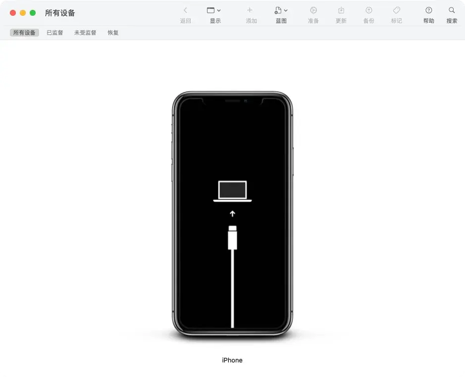
DFU 模式
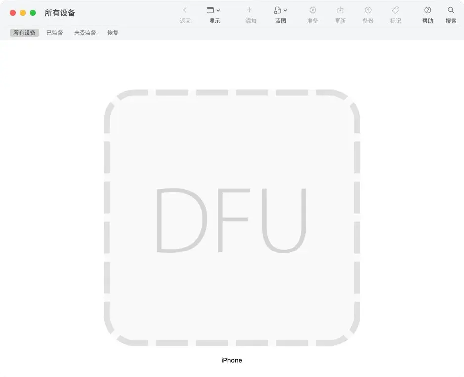
5. 手动进入 Recovery Mode
以下几个按钮或者按键用词略有差异，实际是指相同物理按键：
侧边按钮、顶部按钮、开机键、电源键
调高音量按钮、音量上键、音量+键
调低音量按钮、音量下键、音量-键
主屏幕按钮、HOME 键
没有主屏幕按钮的 iPad 机型：按下调高音量按钮再快速松开。按下调低音量按钮再快速松开。按住顶部按钮，直到设备开始重新启动。继续按住顶部按钮，直到设备进入恢复模式。【备注：与 iPhone 8 或更新机型相同（只是电源键的描述，iPad 称为顶部按钮，iPhone 称为侧边按钮）】
iPhone 8 或更新机型：按下调高音量按钮再快速松开。按下调低音量按钮再快速松开。最后，按住侧边按钮，直到看到恢复模式屏幕。
iPhone 7、iPhone 7 Plus 和 iPod touch（第 7 代）：同时按住顶部（或侧边）按钮和调低音量按钮。持续按住这两个按钮，直到您看到恢复模式屏幕。
配备主屏幕按钮的 iPad、iPhone 6s 或更早机型和 iPod touch（第 6 代）或更早机型：同时按住主屏幕按钮和顶部（或侧边）按钮。持续按住这两个按钮，直到您看到恢复模式屏幕。
以上操作无需滑动解锁，按电源键后会出现 “滑动来关机” 的界面，否则没有任何反应。
顶部（或侧边）按钮，即电源键，因所处位置有所差异故称。
注意：以上操作出现 Apple Logo 不要松开，直到出现如下图的恢复模式画面。
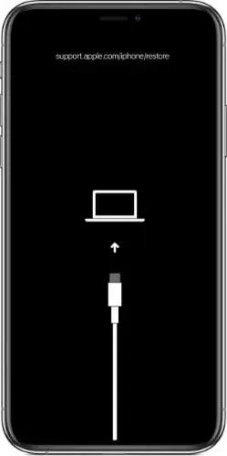
以下是 Finder 提示状态截图：
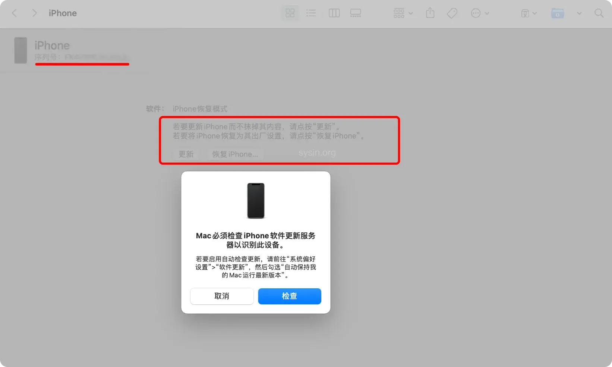
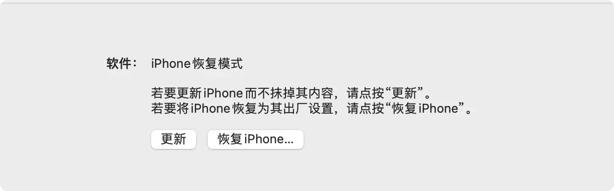
可以与下面 DFU 模式对比，功能略有差异，多了 “序列号” 的显示。
“更新” 可用：更新固件但保留数据。
6. 手动退出 Recovery Mode
没有主屏幕按钮的 iPad 机型：按下调高音量按钮再快速松开。按下调低音量按钮再快速松开。按住顶部按钮，直到设备开始重新启动。继续按住顶部按钮，直到屏幕出现 Apple Logo 松开，等待直到进入锁屏状态，退出成功。
iPhone 8 或更新机型：按下调高音量按钮再快速松开。按下调低音量按钮再快速松开。最后，按住侧边按钮，直到屏幕出现 Apple Logo 松开，等待直到进入锁屏状态，退出成功。
iPhone 7、iPhone 7 Plus 和 iPod touch（第 7 代）：同时按住顶部（或侧边）按钮和调低音量按钮。持续按住这两个按钮，直到屏幕出现 Apple Logo 松开，等待直到进入锁屏状态，退出成功 (sysin)。
配备主屏幕按钮的 iPad、iPhone 6s 或更早机型和 iPod touch（第 6 代）或更早机型：同时按住主屏幕按钮和顶部（或侧边）按钮。持续按住这两个按钮，直到屏幕出现 Apple Logo 松开，等待直到进入锁屏状态，退出成功。
注意：与进入 Recovery Mode 的按键相同，但是在出现 Apple Logo 后要松开。
7. 手动进入 DFU Mode
没有主屏幕按钮的 iPad 机型：与 iPhone 8 或更新机型相同（只是电源键的描述，iPad 称为顶部按钮，iPhone 称为侧边按钮）
按下调高音量按钮再快速松开
按下调低音量按钮再快速松开
按住顶部按钮不松开，出现 “滑动来关机” 的界面，直到屏幕变黑
一旦屏幕黑屏，松开顶部按钮
同时快速按住顶部和调低音量按钮持续 5 秒钟
5 秒后，松开侧顶部按钮，不放开调低音量按钮，直到 iTunes/Finder 提示 “恢复模式”
iPhone 8 或更新机型：
按下调高音量按钮再快速松开
按下调低音量按钮再快速松开
按住侧边按钮不松开，出现 “滑动来关机” 的界面，直到屏幕变黑
一旦屏幕黑屏，松开侧边按钮
同时快速按住侧边和调低音量按钮持续 5 秒钟
5 秒后，松开侧侧边按钮，不放开调低音量按钮，直到 iTunes/Finder 提示 “恢复模式”
iPhone 7、iPhone 7 Plus 和 iPod touch（第 7 代）：同时按住调低音量按钮和电源键不放，这时会屏幕上会出现 Apple Logo ，继续保持按住两个按键不放，等 消失大概 2-3 秒后，松开电源键，但继续保持按住 HOME 键，iPhone 还是处于黑屏状态，直到 iTunes/Finder 提示 “恢复模式”。
配备主屏幕按钮的 iPad、iPhone 6s 或更早机型和 iPod touch（第 6 代）或更早机型：请同时按住开电源键和 HOME 键，持续到第 10 秒的时候，请立即松开电源键，并继续保持按住 HOME 键。这个时候 iTunes/Finder 会自动启动，并提示进入恢复模式（iOS 设备会一直保持黑屏状态）。
注意：成功进入 DFU 模式，iOS 设备是黑屏状态，电脑上提示仍然是 “恢复模式” 字样，如果 iOS 设备的屏幕亮了，或者你看到屏幕上出现 Apple Logo ，或者是 iTunes 的 Logo，都表示没有进入 DFU 模式。
注意：进入 DFU 模式仍然显示 “恢复模式”，但是与 “恢复模式” 有所差异。
以下是 DFU 模式 Finder 截图：
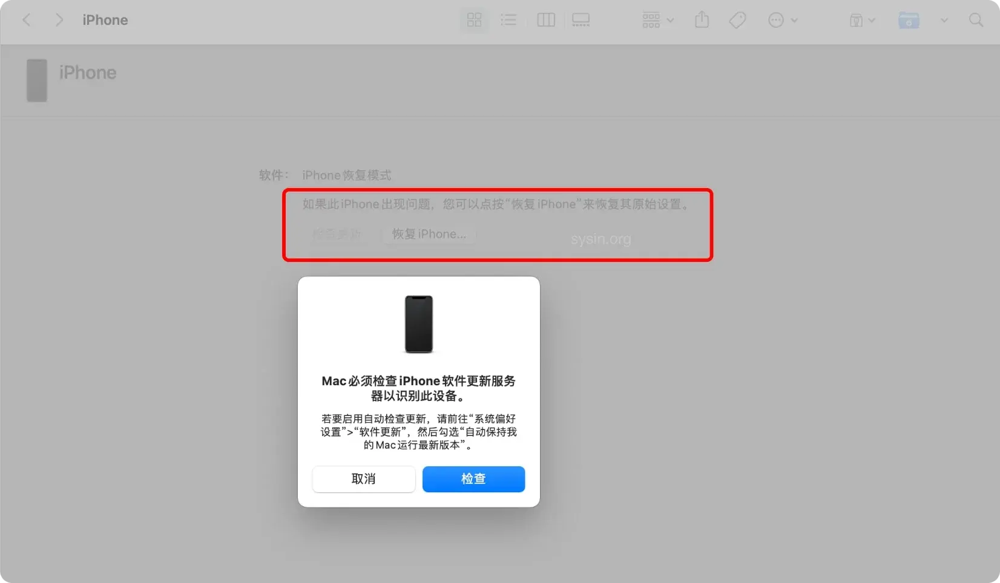
可以与上面 Recovery 模式对比，“更新” 不可用，仅能恢复原始设置，会抹掉所有数据，另外不显示序列号。
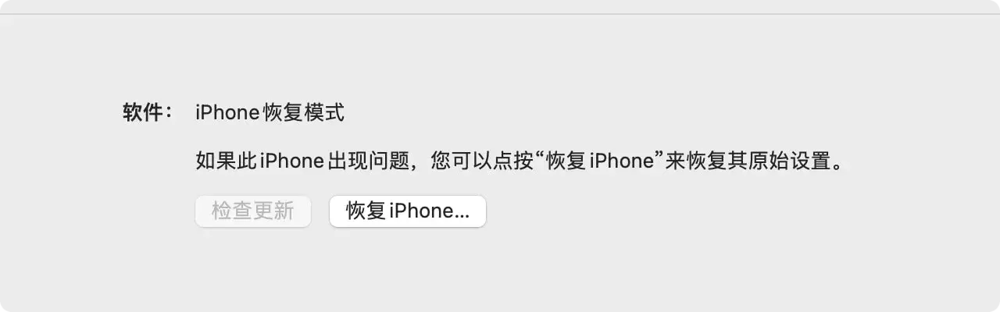
8. 手动退出 DFU Mode
没有主屏幕按钮的 iPad 机型：与 iPhone 8 或更新机型相同（只是电源键的描述，iPad 称为顶部按钮，iPhone 称为侧边按钮）
按下然后松开音量上键
按下然后松开音量下键
按下电源键并保持按下状态，直到 Apple Logo 出现在屏幕上松开电源键iPhone 8 或更新机型：
按下然后松开音量上键
按下然后松开音量下键
按下电源键并保持按下状态，直到 Apple Logo 出现在屏幕上松开电源键iPhone 7、iPhone 7 Plus 和 iPod touch（第 7 代）：同时按住音量-键和电源键不松开，直到屏幕上出现 Apple Logo 后，松开音量减键和电源键即可 (sysin)。
配备主屏幕按钮的 iPad、iPhone 6s 或更早机型和 iPod touch（第 6 代）或更早机型：同时按住 HOME 键和音量+键不放开，直到屏幕上出现 Apple Logo 后，松开 HOME 键和音量+键。
9. 常规更新 OTA
参看：更新 iPhone、iPad 或 iPod touch
OAT 更新即在线更新，OTA 一般是指 Over-the-Air Technology。在线更新虽然方便，但是毕竟是一种打补丁方式的更新，特别是频繁的使用在线更新，有时候可能导致系统卡顿或者出现一些异常，所以建议下载完整固件手动更新，而且没有必要更新所有的小版本。
二、准备更新
1. 下载 ipsw 格式完整 iOS 软件包
https://ipsw.me/
选择设备类型和型号，下载 Signed IPSWs。
2. 准备 iPhone
重启 iPhone：“设置” ⚙️ > 通用 > 关机，然后重新开机，确保 iPhone 运行状态良好，一次性更新成功。
确保有充足的剩余空间：“设置” ⚙️ > 通用 > iPhone 存储空间。
不同的机型和软件版本对存储空间要求有所差异，可能需要至少 5GB 及以上剩余空间，建议确保有 10GB 及以上的可用容量。
3. 准备 Mac 或者 PC
下载 iTunes：macOS Catalina 10.15（不包含）之前的版本，或者 Windows，请下载最新版的 iTunes。
使用 Finder（访达）：适用于 macOS Catalina 10.15（包含）或更新版本，若软件版本低会提示更新（自动下载软件更新）。
使用 Apple Configurator 2 同样可以在恢复模式或者 DFU 模式下更新和恢复软件，本文不做详细描述。
在 Apple Configurator 2 中，在设备窗口中选择设备并将 .ipsw 文件拖到设备上，然后选取更新或恢复设备。
4. 使用线缆连接 iPhone 和电脑
将 iPhone 或者 iPad 连接电脑，这不用赘述了吧。参看官方文档：使用线缆连接 iPhone 和电脑。
三、更新过程
以下示例 iOS 14.5 完整更新到 15.0，在 macOS Big Sur 中操作，旧版 macOS 或者 Windows 中使用 iTunes 更新过程类似。
同样适用于 iOS、iPadOS 17，电脑系统使用 macOS Monterey、macOS Ventura 或者 macOS Sonoma 都同样适用，操作步骤和界面几乎相同。
关键要点：
使用本地下载的 ipsw 更新，在 macOS 中按住 Option 键在点击 “更新” 按钮，浏览到下载的 ipsw 文件。在 Windows 中使用 iTunes 更新对应按住 Shift 键。
1. 连接 iPhone
如图，点击 “信任”，此时在 iPhone 上点击 “信任”，并根据提示输入密码。
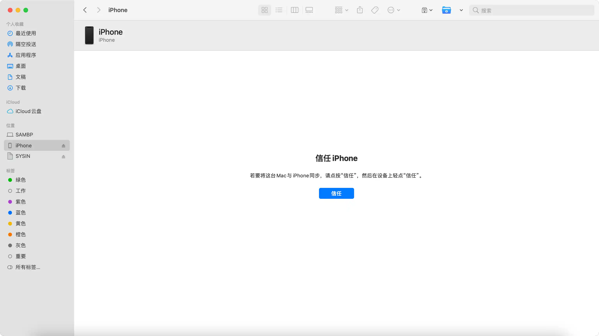
2. 检查更新（非必要）
此时 “更新” 按钮若未出现，点击 “检测更新”。
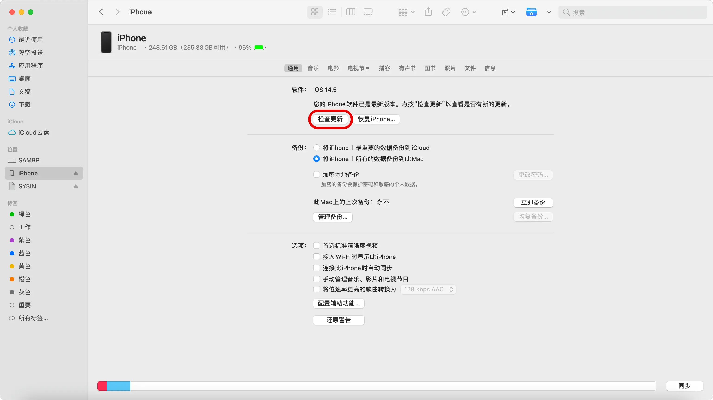
检查到新的软件版本，点击 “取消”。
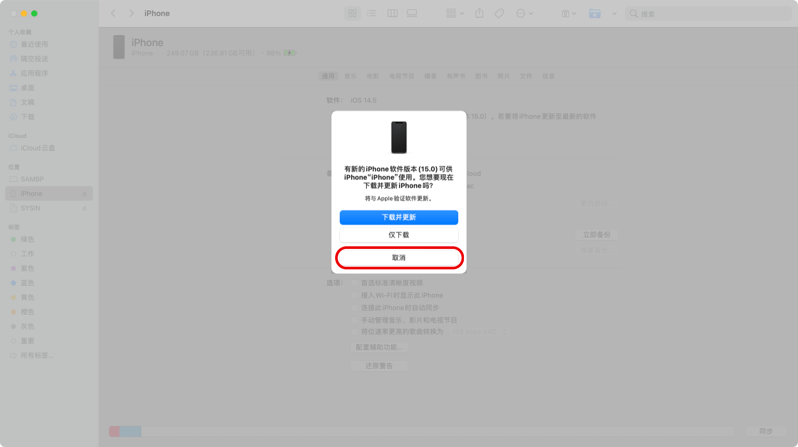
3. 更新 ipsw
此时，“更新” 按钮出现了，按住 Option 键，同时点击 “更新”。
也可以忽略上述步骤 2，无需检查更新，按住 Option 键，同时点击 “检测更新”。
备注：在 Windows iTunes 中对应是按住 Shift 键。
警告：点击 “恢复 iPhone…” 将更新软件并抹掉数据，恢复出厂设置。
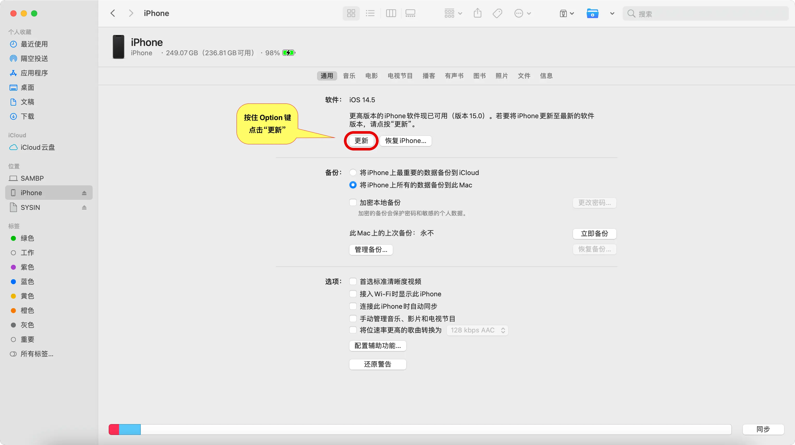
此时，出现打开对话框，浏览到上述下载的 ipsw 文件。
4. 更新支持软件（如果需要）
macOS Big Sur 11.5 可以完全支持 iOS 15，无需任何更新操作。
如果 macOS 版本不是最新，可能会提示更新软件，这里并非更新系统，一般几分钟即可更新完毕。
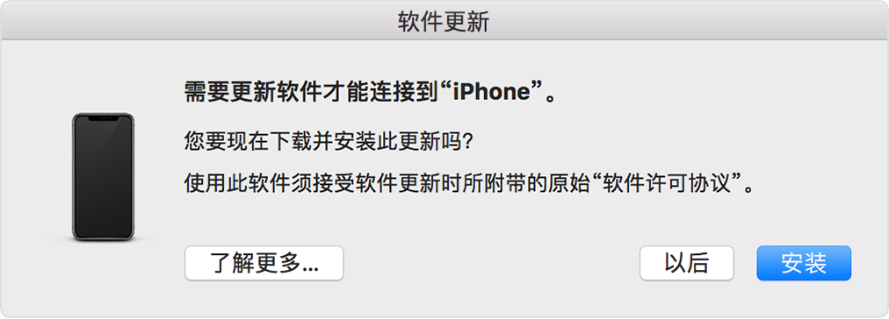
5. 再次更新 ipsw
重复上述步骤 3，按住 Option 键点击 “更新” 并浏览到 ipsw 文件。此时出现确认“更新”。
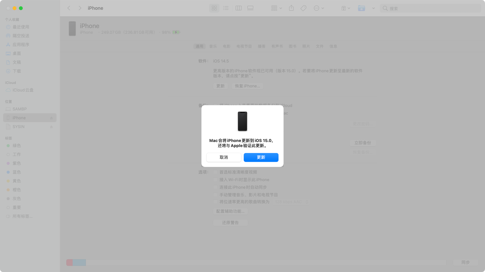
更新正式开始，其间 iPhone 会自动进入恢复模式进行软件更新，并自动重启。
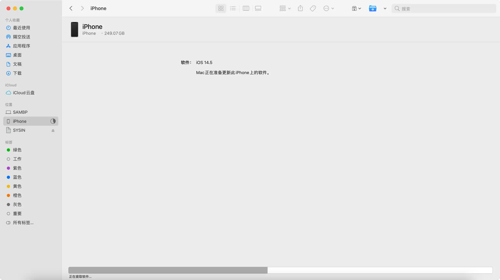
提示：在 “iPhone” 上输入密码来继续此次 iOS 更新。在 iPhone 上输入密码继续。
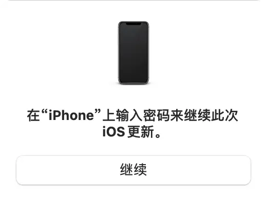
更新过程完毕后提示如下。
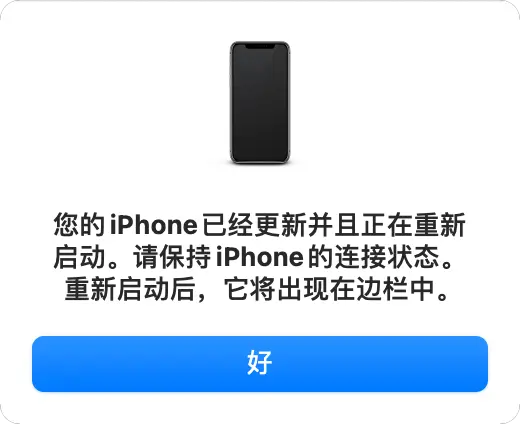
此时更新完毕 iPhone 自动重启。
6. 更新成功
iPhone 启动后，自动重新连接，可以看到版本已经更新。
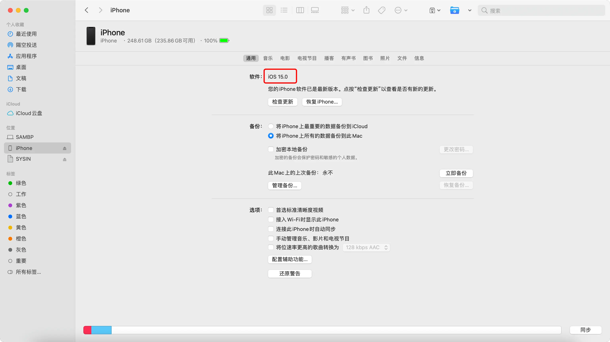
附：屏蔽 iOS 自动更新
以上已经更新到 iOS 15，现在可以继续屏蔽自动更新了，防止那些顽固的红点数字角标出现。
使用 Windows？请查看：

文章用于推荐和分享优秀的软件产品及其相关技术，所有软件默认提供官方原版（免费版或试用版），免费分享。对于部分产品笔者加入了自己的理解和分析，方便学习和研究使用。任何内容若侵犯了您的版权，请联系作者删除。如果您喜欢这篇文章或者觉得它对您有所帮助，或者发现有不当之处，欢迎您发表评论，也欢迎您分享这个网站，或者赞赏一下作者，谢谢！
 支付宝赞赏
支付宝赞赏  微信赞赏
微信赞赏赞赏一下
敬请注册！点击 “登录” - “用户注册”（已知不支持 21.cn/189.cn 邮箱）。 请勿使用联合登录（已关闭）。